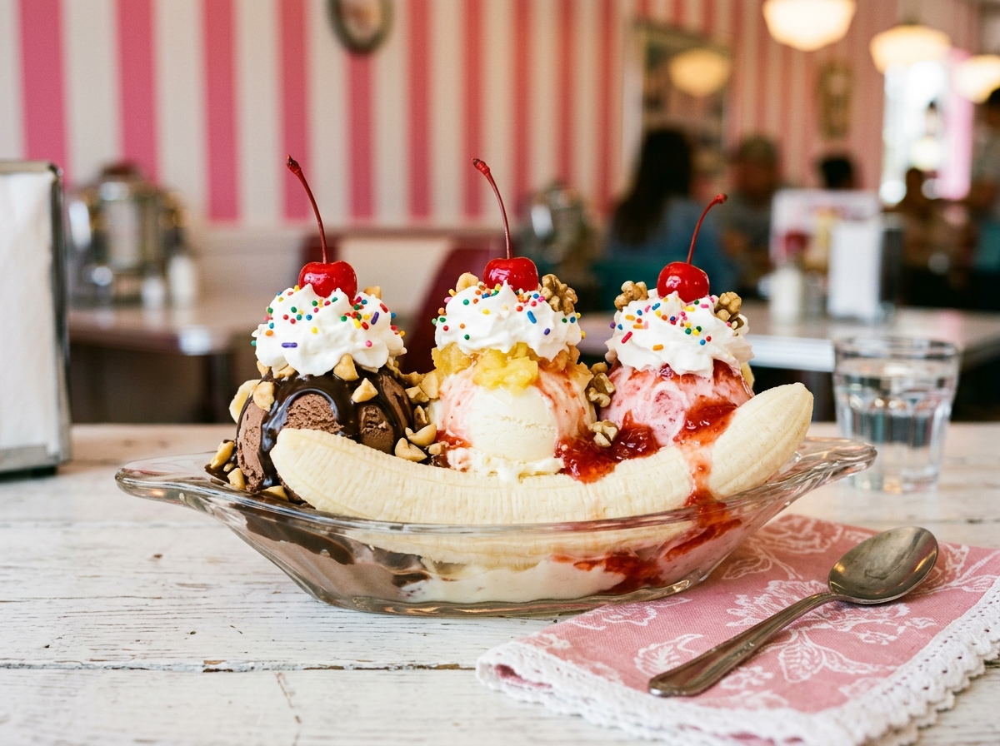

Scoop Hours Afternoons & evenings daily, in season — see hours
What's in the case
Pick Your Happy
Something for everyone — including dairy-free friends and even the dog.

Hand-Dipped Scoops
24 rotating Hershey's flavors, scooped generously in cups and cones — four sizes.

Sundaes & Splits
The Peanut Butter Chunk Brownie Sundae is the local legend. Banana splits, too.

Dole Whip & Shave Ice
Dairy-free Dole Whip in rotating flavors, plus true Hawaiian shave ice all summer.

Floats, Shakes & More
Root beer floats, milkshakes, banana pudding, unusual sodas — and pup cups.